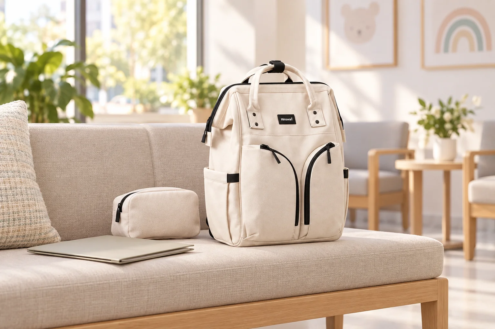
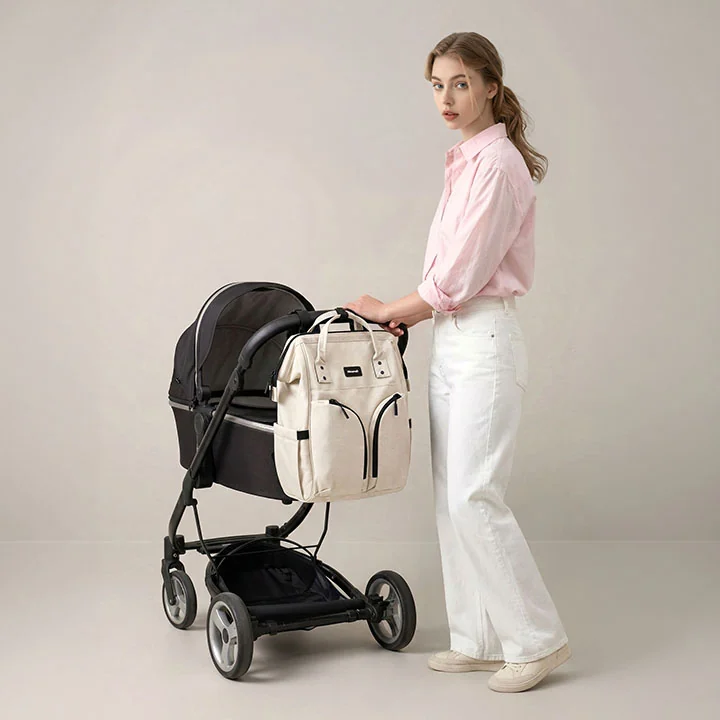

아이와 진료를 기다리는 동안, 필요한 것부터

아이와 진료 예약에 맞춰 집을 나설 때 가방을 채우는 일보다 바쁜 순간은 접수대 앞일 수 있습니다. 예약 화면을 찾는 동안 아이가 다른 물건을 들고 싶어 하거나, 대기 자리에서 꺼낸 소품이 진료실로 이동할 때 손에 남기도 합니다. 준비할 물건의 수를 늘리기보다 언제 무엇을 꺼내고 다시 넣을지 생각해볼 만합니다. 접수에 쓸 자료와 기다리는 동안의 개인 물건을 구분하면 한 번에 가방을 모두 펼치지 않아도 됩니다.
방문 기관에서 받은 예약 문자나 안내를 먼저 읽습니다. 접수에서 준비할 자료와 확인 방법은 그 안내를 기준으로 정하고, 예전에 방문했을 때의 목록과 같으리라 생각하지 않습니다. 진료와 관련해 별도 준비나 제한 안내를 받았다면 그것을 따릅니다. 필요한 자료가 종이인지 화면인지에 따라 자리부터 다르게 잡을 수 있습니다.
접수에서 보여줄 묶음
종이 자료를 가져가야 한다면 얇은 파일이나 봉투에 모아 다른 외출 종이와 구분합니다. 접수할 때 한 번에 꺼낼 자료의 범위를 정하면 지갑 속 오래된 종이나 개인 문서까지 함께 펼칠 필요가 줄어듭니다. 휴대전화 화면을 보여줄 경우에는 다시 여는 경로를 미리 알아둡니다. 예약 안내를 쉽게 찾을 수 있게 준비하되 다른 개인 정보가 함께 보이는 화면을 오래 펼쳐두지 않으면 됩니다.
보호자가 아이의 손을 잡고 이동할 상황이라면 가방을 여는 동작도 생각해봅니다. 등을 향해 손을 뻗어 찾는 방식이 불편하다면 안정된 자리에서 백팩을 몸 앞으로 가져와 필요한 묶음만 꺼낼 수 있습니다. 접수대 앞에서 처음 자리 배치를 바꾸기보다 집에서 한 번 자료를 꺼내보면 어느 물건을 먼저 빼야 하는지 알 수 있습니다. 실제 가져갈 소지품을 담은 상태로 봐야 빈 가방에서 생각한 순서와 차이가 드러납니다.
아이를 위해 챙긴 물건도 이름보다 사용하는 순간으로 나눌 수 있습니다. 평소 외출에서 필요한 물건과 기다리는 동안 조용히 쓸 소품은 접수 자료 다음에 꺼낼 묶음입니다. 장소에서 사용하거나 먹고 마실 수 있는지는 해당 기관 안내를 따릅니다. 작은 소품을 여러 개 가져가더라도 한꺼번에 꺼내놓기보다 실제 사용할 것을 고르면 진료실로 이동하기 전에 회수할 범위가 줄어듭니다.
Himawari No.1208 제품 정보의 아이보리 모델을 이런 외출의 개인 가방으로 살필 때는 상품 이름보다 그날의 자료와 소지품을 기준으로 생각합니다. 접수 묶음을 먼저 꺼내고 대기 중 사용할 파우치를 다음에 찾을 수 있는지 실제로 시도해볼 수 있습니다. 아이와 이동하면서 계속 들고 다닐 가방이므로 여러 곳에 물건을 나누어 놓기보다 한 번 꺼낸 묶음이 돌아갈 자리를 정하는 구성이 가능합니다.

기다리는 자리에서 이동할 때
대기 공간에서는 가방을 둘 수 있는 위치와 통로를 봅니다. 안내된 자리에 놓고 끈이 다른 사람의 이동에 걸리지 않게 정리합니다. 아이가 손에 소품을 들고 있다면 곧 이동할 때 누가 챙길지 알아둡니다. 소품의 개수를 단순하게 정해놓으면 의자 주변에 남은 것이 있는지 확인하기 쉽습니다. 보호자가 혼자 모든 것을 기억하려 하기보다 꺼낸 물건을 같은 파우치로 돌리는 순서를 반복할 수 있습니다.
예를 들어 기다리는 동안 작은 책 한 권을 꺼냈다면 다른 장난감까지 함께 펼치지 않고 그 책만 사용하도록 준비할 수 있습니다. 이동 안내가 나오면 책을 접수 자료와 섞지 않고 원래 묶음으로 돌려놓습니다. 대기 시간이 달라지거나 아이에게 다른 물건이 필요해지면 꺼낼 범위를 바꿀 수 있습니다. 사용한 물건은 한 묶음으로 모아두고 이동할 때 회수할 자리를 유지하면 됩니다.
갈아입을 옷 등 개인 준비물이 있다면 사용 전후 상태를 나누어 생각합니다. 사용한 물건을 임시로 담을 봉투나 주머니가 필요하면 출발 전에 준비할 수 있습니다. 종이 자료와 깨끗한 옷에 바로 닿지 않도록 운반할 위치를 정하고, 처리 방법을 기관에서 안내받는 물건은 그 안내를 따릅니다. 일반적인 외출 소지품의 정리와 기관에서 관리하는 물건의 처리를 서로 섞지 않아야 귀가 뒤에도 무엇을 꺼낼지 분명합니다.
진료실이나 다른 공간으로 이동할 때는 백팩뿐 아니라 별도로 내려놓은 물건을 확인합니다. 겉옷과 아이가 들고 있던 소품, 사용한 확인 자료가 어디에 있는지 살펴봅니다. 아이의 손을 잡기 위해 물건을 잠시 바닥이나 의자에 놓았다면 이동 전에 회수해야 합니다. 한 번에 모두 챙기려고 서두르기보다 개인 자료를 넣고 소품을 모은 다음 가방을 닫는 순서를 정하면 꺼낸 묶음이 다시 한 곳으로 돌아옵니다.
진료 뒤 안내 자료를 받으면 접수에 사용했던 문서와 구분해 넣습니다. 다음에 확인할 내용은 기관의 설명을 기준으로 남겨두고, 이해하지 못한 부분이 있다면 해당 기관에 문의합니다. 새로 받은 종이를 가방의 여러 주머니에 나누어 넣으면 집에서 다시 찾을 때 위치를 떠올려야 합니다. 준비한 파일 안에서 받은 자료의 자리를 따로 정하면 의료 내용을 임의로 요약하거나 짐작하지 않고 원래 안내를 다시 볼 수 있습니다.
집에 오면 사용한 봉투와 소품부터 가방에서 꺼냅니다. 기관에서 받은 안내는 필요한 보관 장소로 옮기고, 다음 방문 일정은 실제로 안내받은 내용을 기준으로 기록할 수 있습니다. 그날의 임시 물건이 가방에 계속 남지 않도록 평소 소지품과 다시 구분하세요. 다음 동행 외출에는 무엇을 더 가져갈지보다 접수에서 무엇을 찾기 어려웠는지, 이동할 때 어느 물건을 따로 챙겨야 했는지를 먼저 떠올리면 자리 배치를 구체적으로 바꿀 수 있습니다.